IA로 와이어프레임·프로토타입·PRD를 만들고, 지침·메모리·예약·크롬으로 일을 맡겨요
오전에는 어제 쓴 IA로 와이어프레임과 미드피델리티 프로토타입을 만들고, 외부에 보여 줄 때 고칠 점을 정리해요. 점심 뒤에는 상황 설정에 맞춰 PRD의 문제 파트를 써요. 그다음 그 작업 대화에서 지침을 뽑아 프로젝트에 넣고, 메모리·예약 작업을 써 본 뒤 클로드 인 크롬·Gmail 커넥터·데스크톱 앱으로 같은 일을 맡겨 봐요. 배포 실습은 다음 수업으로 넘겼어요.
교육 개요
| 시간 | 09:00–18:00 (점심 12:00–13:00, 수업 8시간) |
|---|---|
| 교과 | [기본] AI 서비스 개발 · 4일차 (총 18일) |
| 교육 목표 | IA로 화면을 펼쳐 PRD에 담고, 반복 작업을 클로드에 맡긴다. |
| 수업이 끝나면 | ① IA로 와이어프레임(모바일·PC) 그리기 ② 미드피델리티 프로토타입 만들고 외부용으로 다듬기 ③ 상황 설정에 맞춰 PRD 문제 파트 쓰기 ④ 작업 대화에서 지침 뽑기 · 메모리 · 예약 작업 ⑤ 크롬·커넥터·데스크톱 앱으로 같은 일 맡겨 보기 |
수업 전 준비
- 어제 IA: 공동 시트의 내 탭(IA 2차)을 열어 둬요.
- PRD 양식: 슬랙의 PRD 양식 구글 문서를 사본으로 만들어 둬요. 공유는 '링크가 있는 모든 사용자 · 댓글 작성자'로 열어요.
- 크롬: 클로드 인 크롬 확장 프로그램을 설치할 수 있게 크롬에 로그인해 둬요.
타임테이블
| 시간 | 구분 | 내용 |
|---|---|---|
| 09:00–10:00 | 오늘의 단어 | 오늘의 단어 · 어제 IA 정리 |
| 10:00–10:40 | SESSION 1 | IA로 와이어프레임 그리기 |
| 10:40–11:40 | SESSION 2 | IA로 미드피델리티 프로토타입 만들기 |
| 11:40–12:00 | SESSION 3 | 간단 PRD |
| 12:00–13:00 | 점심 | |
| 13:00–14:50 | SESSION 3 | PRD 양식에 상황 설정대로 쓰기 |
| 15:00–15:20 | SESSION 4 | 프로젝트와 지침 |
| 15:20–16:05 | SESSION 5 | 메모리와 예약 작업 |
| 16:05–16:50 | SESSION 6 | 클로드 인 크롬 · 커넥터 · 데스크톱 앱 |
| 16:50–18:00 | 정리 | 실습 보완 · 서비스 미리 가입 · 회고 |
| 이월 | SESSION 7~12 | 시안 비교 · 데이터 정의 · 배포 · 브라우저 저장 |
오늘의 단어
오늘 처음 나오는 말을 먼저 짧게 짚고 시작해요. 수업 중에 다시 나오면 이 표로 돌아와요.
| 단어 | 뜻 |
|---|---|
| 지침 | 프로젝트 안의 모든 대화에 매번 적용되는 규칙 |
| 브라우저 | 크롬·사파리처럼 웹 페이지를 열어 보여 주는 프로그램. 내 컴퓨터·휴대폰 안에 있어요 |
| 서버 | 인터넷 어딘가에서 항상 켜져 있으면서 요청을 받아 처리하는 컴퓨터 |
| 데이터베이스 | 여러 사람의 데이터를 한곳에 모아 두는 저장소. 보통 서버 쪽에 있어요 |
| 브랜치 | 원본(main)은 그대로 두고 따로 고쳐 보는 작업 줄기 |
| 입력 데이터 | 사용자가 화면에서 직접 넣는 값 |
| 기본 데이터 | 사용자가 아무것도 하기 전에 시스템에 이미 있어야 하는 값 |
| 배포 | 내 컴퓨터의 파일을 인터넷 주소로 열 수 있게 올리는 일 |
| CD | 깃헙에 올리면 자동으로 배포되는 흐름 |
| 프리뷰 배포 | 실제 사이트는 그대로 두고 미리보기 주소를 따로 만드는 배포 |
| 롤백 | 이전 배포로 되돌리기 |
| 브라우저 저장 | 데이터를 지금 쓰는 브라우저 안에만 저장하는 방법 |
| 커밋 | 파일을 고친 내용을 저장소에 기록하는 일. 깃헙 화면의 Commit changes 버튼 |
| CI | 올린 코드를 배포 전에 자동으로 검사하는 흐름(오늘은 쓰지 않아요) |
IA로 와이어프레임 그리기
개념1-1. 개념
어제 시트에 쓴 IA를 바탕으로 전체 화면의 와이어프레임을 그려요. 와이어프레임은 다른 사람이 직접 눌러 보지 않고도 모든 화면과 상태를 볼 수 있어야 해요. '가려진 부분은 직접 동작해서 찾아보세요'는 안 돼요. 그래서 화면 번호·이름, 스크롤로 가려진 영역, PC 화면까지 다 펼쳐서 나열해요. 화면마다 세로 높이가 달라지는 게 정상이에요.
따라 하기1-2. 따라 하기
어제 IA 표(시트 캡처나 파일)를 준비해요.
아래 프롬프트에 IA를 붙여 넣어 와이어프레임을 받아요.
프롬프트 1 · 복사해서 클로드에 붙여 넣으세요요청: 아래 IA를 기반으로 와이어프레임을 그려 줘. 화면마다 왼쪽 위에 IA No와 화면 이름을 표시하고, 스크롤로 숨겨진 영역도 모두 펼쳐서 보여 줘 내용: IA: [IA 표 붙여 넣기] 형식: 흑백 와이어프레임 아티팩트 1개. 플로우별로 줄을 나누고(예: 구매 플로우 / 탐색 플로우), 좌우로 넘기지 말고 세로로 나열해
아래 확인표로 하나씩 보고, X인 줄만 골라 다시 요청해요.
모바일만 만들었다면 같은 IA로 PC(데스크톱) 크기 와이어프레임도 만들어요. 웹 서비스라면 PC 화면의 UX·UI도 꼭 고려해야 해요.
2차 버전을 공유할 때는 1차와 비교해 무엇을 바꿨는지 함께 적어요.
점검1-3. 확인표
| 확인할 것 | X라면 이렇게 요청해요 |
|---|---|
| 화면마다 IA No와 화면 이름이 있나 | 화면 왼쪽 위에 IA No와 화면 이름을 표시해 줘 |
| 플로우가 섞이지 않았나 | 구매 플로우, 탐색 플로우처럼 플로우별로 묶어 줄을 나눠 줘 |
| 스크롤로 가려진 영역이 다 보이나 | 스크롤로 숨겨진 영역들도 찾아서 표시해 줘 |
| PDF로 보내도 다 보이나 | 좌우로 넘기는 화면은 PDF에서 펼쳐지지 않아요. 세로로 나열한 안으로 다시 만들어 줘 |
| PDF로 뽑았다면, 페이지마다 화면 이름이 IA와 맞나 | IA No 목록과 PDF 페이지를 하나씩 대조해요(AI에게 맡기지 않고 직접) |
| PC 화면도 있나 | 같은 IA로 데스크톱 크기 와이어프레임도 만들어 줘 |
| 내려받은 html에서 이미지가 빠지지 않나 | 이미지를 포함해서 외부에 공유할 수 있도록 합쳐서 작업해 줘 |
결과1-4. 결과
이렇게 보이면 성공확인표의 모든 줄이 O이고, IA 표의 화면 수와 와이어프레임 화면 수가 같다
IA로 미드피델리티 프로토타입 만들기
개념2-1. 개념
IA 표는 화면 목록, 흐름 표는 화면 사이의 길, 예외 표는 화면의 다른 상태, 주석 표는 영역마다 할 일이에요. 넷을 한 요청에 넣으면 AI가 화면을 빠뜨리거나 지어낼 여지가 줄어요. 결과는 IA 표와 줄 단위로 대조해요. 운영자 화면처럼 '확인 필요'인 화면은 자리만 만들고 예시 데이터라고 표시해요.
따라 하기2-2. 따라 하기
이벤트 페이지 대화에서 아래 프롬프트에 IA 표·흐름 표·예외 표·주석 표를 붙여 넣어 보내요.
프롬프트 2 · 복사해서 클로드에 붙여 넣으세요요청: 아래 IA 표의 모든 화면을 한 번에 만들어 줘. 화면마다 맨 위에 화면 ID를 작게 표시하고, 흐름 표대로 버튼을 누르면 다음 화면으로 넘어가게 해. 예외 표의 상태는 같은 화면 안에서 바꿔 볼 수 있게 해. '확인 필요' 화면은 자리만 만들고 '예시 데이터'라고 표시해. 표에 없는 화면이나 기능은 넣지 마 내용: IA: [IA 표] / 흐름: [흐름 표] / 예외: [예외 표] / 주석: [주석 표] 형식: 아티팩트 1개(이벤트 페이지 v4) + 표(화면 ID / 만든 화면 / 반영한 흐름·예외 / 빠뜨린 것)
미리보기에서 화면 ID를 하나씩 찾아가며 아래 대조표를 채워요. 버튼으로 넘어가는지, 예외 상태를 바꿔 볼 수 있는지 봐요.
X인 줄만 골라 고쳐 달라고 해요.
프롬프트 3 · 수정 요청요청: 아래 대조표에서 X인 줄만 고쳐 줘. 나머지 화면은 바꾸지 마 내용: [대조표에서 X인 줄 붙여 넣기] 형식: 고친 아티팩트 + 바꾼 부분 3줄 요약
IA에 없는 화면·기능이 들어갔는지 점검받아요.
프롬프트 4 · 점검·피드백요청: 방금 만든 아티팩트와 IA 표를 비교해서, IA에 없는데 들어간 화면·버튼·기능을 찾아 줘 내용: IA: [IA 표 붙여 넣기] 형식: 표(찾은 것 / 어디에 있나 / 지울까, IA에 추가할까 제안)
기록표
IA 대조표 예시예요.
| 화면 ID | 화면이 있나 | 버튼으로 넘어가나 | 예외 상태 | 메모 |
|---|---|---|---|---|
| E01 이벤트 페이지 | O | O | O 오류 문구·마감 상태 전환 | - |
| E02 신청 완료 | O | O | - | - |
| E03 동의 전문 | O | X | - | '동의 전문 보기' 링크가 없음 → 수정 요청 |
| A01 신청 목록 | O | - | - | '예시 데이터' 표시 있음 |
| 화면 ID | 화면이 있나 | 버튼으로 넘어가나 | 예외 상태 | 메모 |
|---|---|---|---|---|
막히면2-3. 막히면
| 이렇게 보이면 | 이렇게 해요 |
|---|---|
| 화면이 한 페이지에 길게 이어져 나와요 | '화면마다 따로 보이게 하고, 위쪽에 화면 ID 이동 탭을 달아 줘'를 덧붙여 다시 요청해요. |
| 운영자 화면에 진짜 같은 이름·연락처가 가득해요 | '예시 데이터'라고 표시하고 가상 이름만 쓰라고 요청해요. 실제 개인정보처럼 보이는 값은 공유하기 전에 지워요. |
| 고칠 때마다 다른 화면까지 바뀌어요 | 수정 요청에는 대조표의 X인 줄만 넣고, 바꾼 부분을 3줄로 요약하게 해요. |
결과2-4. 결과
이렇게 보이면 성공IA 표의 화면 ID가 모두 아티팩트에 있고, 대조표에 X가 남아 있지 않다
추가 실습2-5. 추가 실습: 내 IA로 만들고 제3자 테스트용으로 다듬기
내 IA로도 같은 방법으로 만들어요. 그다음 다른 사람(제3자)이 테스트하기 쉽게 다듬어요.
프롬프트
요청: 내 IA를 기반으로 미드피델리티 수준의 프로토타입을 만들어 줘. 눌러서 동작하며 사용자 흐름을 알 수 있게 내용: IA: [IA 표] / 흐름·예외: [유즈케이스 시트의 성공·실패 표] 형식: 아티팩트 1개. 화면마다 IA No 표시
프롬프트
요청: 처음 보는 사람도 이 기능을 쉽게 테스트할 수 있게 고쳐 줘 내용: ① 주요 버튼 중심으로만 보여 주고 누를 버튼은 줄여 줘 ② 지금 무엇을 눌러야 하는지 강조해서 알려 줘 ③ 이번 신규 기능이 아닌 화면은 모노톤(흑백)으로 처리해 줘 ④ 화면 오른쪽에 예외 상황(오류, 품절, 운영시간 외 등)을 켜고 끄는 테스트 조건 패널과 '처음부터 다시' 버튼을 넣어 줘 형식: 고친 아티팩트 + 바꾼 부분 3줄 요약
확인할 점
| 확인할 것 | 이유 |
|---|---|
| '결제 요청 전송 — 완료, 카드사 승인 확인 — 완료' 같은 내부 처리 과정 문구가 화면에 남아 있나 | 외부 사람이나 제3자에게 보여 줄 테스트용이면 지워야 해요. 검수할 때 꼭 봐요 |
| 모바일 화면을 그대로 PC 크기로 바꿔 봤나 | 새 화면을 만들지 말고 기존 화면을 그대로 옮겨 보면, 흐름상 PC에 어울리지 않는 어색한 곳이 드러나요. 그곳을 찾는 것이 목적이에요 |
| PC 화면에 상단 메뉴(GNB)와 푸터가 있나 | 모바일에서 옮기면 자주 빠져요 |
1. 클로드 디자인 아티팩트는 외부에서 열 수 없는 환경이 많으므로, PDF·슬라이드로 바꾸고 그 안에서 화면이 빠지지 않게 한다.
2. 모바일 버전을 만든 뒤, 새 화면을 만들지 말고 기존 화면 그대로 데스크톱 버전으로 바꿔 본다. 데스크톱에 어울리지 않는 어색한 흐름을 찾아낸다.
3. AI가 만든 결과물에서 고객에게 보이면 안 되는 부분을 찾아, 문서 목적에 따라 지운다.
막히면
| 이렇게 보이면 | 이렇게 해요 |
|---|---|
| 파일이 너무 커서 html 내보내기가 안 돼요 | 모바일·데스크톱처럼 2개 파일로 나눠서 내보내요 |
| 다른 사람이 이미지만 받아서 눌러 볼 수 없어요 | 이미지와 함께 .html 파일이나 #play 링크를 보내요 |
간단 PRD v1
개념3-1. 개념
문제·가설·지표·IA·시나리오를 한 장에 모은 것이 간단 PRD예요. 새로 쓰지 않고 화요일에 만든 흐름 표·예외 표·IA 표를 그대로 가져와요. 지표는 월요일에 정한 두 가지를 가져와요. 가설을 판정하는 핵심 지표(신청 고객 중 이벤트 기간 구매율)와, 페이지가 잘 작동하는지 보는 보조 지표(방문 대비 신청 완료율)예요.
출처: 김수정, 「AI 프로토타입으로 배우는 데이터 서비스기획」 3.7 간단 요구사항 기획서
예시3-2. 채워진 예시
이커머스 셀렉트마켓 연말 이벤트 간단 PRD 예시예요. 아직 정하지 않은 것은 지어내지 않고 '확인 필요'로 남겨요.
| 항목 | 작성 내용 |
|---|---|
| 개요 | 연말 선물을 고르는 기존 고객이 혜택을 한곳에서 확인하고 사전 신청하는 페이지 |
| 문제 | 월요일 문제 정의 문장 |
| 가설·지표 | 가설: 월요일 가설 / 핵심 지표: 신청 고객 중 이벤트 기간 구매율(판정 기준 확인 필요) / 보조 지표: 방문 대비 신청 완료율, 목표 20% |
| IA | 고객: E01 이벤트 페이지(소개·혜택·신청 폼) → E02 신청 완료, E03 동의 전문(확인 필요) / 운영자: A01 신청 목록(확인 필요) |
| 유즈케이스 | 성공 흐름 9단계 + 실패·예외 4가지 |
| 핵심 기능 | 혜택 보기, 사전 신청, 입력 검사, 중복 신청 막기, 마감 처리 |
| 확인 필요 | 신청 목록을 누가 어디서 보는지, 알림 문자 발송 방법, 핵심 지표 판정 기준 |
만들기3-3. 내 것 만들기
빈 템플릿을 직접 채우거나, 아래 프롬프트로 AI 초안을 받아 내 내용으로 고쳐요. 둘 중 편한 쪽 하나면 돼요. [ ] 안은 예시 값이니 내 내용으로 바꿔 써요.
요청: 지금까지 정리한 내용을 간단 PRD 표 한 장으로 모아 줘. 내가 준 내용만으로 채우고, 빠진 정보는 지어내지 말고 '확인 필요'로 표시해 내용: 문제 정의: [연말 선물을 고르는 이커머스 셀렉트마켓 기존 고객은 진행 중인 연말 할인·혜택을 한곳에서 확인하기 어려워, 혜택을 모른 채 다른 쇼핑몰에서 선물을 산다.] / 가설·지표: [혜택을 한 페이지에서 확인하고 사전 신청하면 이벤트 기간 구매가 늘 것이다 · 핵심 지표: 신청 고객 중 이벤트 기간 구매율 / 보조 지표: 방문 대비 신청 완료율 목표 20%] / 사용자 흐름: [링크 → 혜택 확인 → 입력 → 동의 → 신청 → 완료] / IA: [화요일에 만든 IA 표] / 예외: [연락처 형식 오류, 동의 안 함, 중복 신청, 마감 지남] 형식: 표(개요 / 문제 / 가설·지표 / IA / 유즈케이스 / 핵심 기능 / 확인 필요). IA는 계층으로

| 항목 | 작성 내용 |
|---|---|
| 개요 | |
| 문제 | |
| 가설·지표 | |
| IA | |
| 유즈케이스 | |
| 핵심 기능 | |
| 확인 필요 |
점검3-4. 점검·피드백
칭찬 말고 고칠 점을 받는 게 목적이에요.
요청: 이 PRD를 개발자에게 넘긴다고 생각하고 논리가 끊기는 곳을 찾아 줘 내용: PRD: [방금 만든 PRD 표 전체를 붙여 넣기] 형식: 표(항목 / 앞 항목과 이어지나 O·△·X / 끊기는 이유). 칭찬은 빼고 고칠 점만
실험3-5. 실험해 보기 · '확인 필요' 빼고 요청하기
프롬프트에서 "빠진 정보는 지어내지 말고 '확인 필요'로 표시해"를 지우고 다시 보내 봐요.
무엇을 볼까운영자 화면·알림 방식처럼 내가 정한 적 없는 내용이 들어오는지 봐요. 그런 줄을 찾아 '확인 필요'로 되돌려요.
결과3-6. 결과
이렇게 보이면 성공점검에서 X가 0개이고, 지표 칸에 핵심·보조 지표가 둘 다 있다
링크가 있으면 누구나 볼 수 있어요(보기 전용, 편집 불가). AI가 만든 결과 그대로라 내 결과와 다를 수 있어요. 내 것을 먼저 만든 다음 비교해요.
- 구글 문서 간단 PRD v1
추가 실습3-7. 추가 실습: PRD 양식에 상황 설정대로 쓰기
3-6까지 간단 PRD를 만들었으면, 강사가 공유하는 PRD 양식(구글 문서)의 사본에 내 프로젝트로 옮겨 써요. 아래 상황이라고 가정해요.
도메인과 기업 이름, 팀 이름은 여러분의 소속이에요.
우리 회사는 이미 제품을 갖고 있어요.
지금 프로토타입에서 이번 프로젝트에 무엇을 개선할지를 바탕으로 PRD를 써요.
양식에는 지금 쓸 수 있는 부분도, 아직 정할 수 없는 미결정 사항도 있어요.
적어도 11월 말까지 출시해야 해요.
첫 미팅에 가져갈 제안서·시안이에요.
IA, 와이어프레임, 프로토타입 링크를 넣어요.
지금은 설계보다 문제 파트에 집중해요. PM이 제안해야 하는 상황이에요.
분량은 문제 파트 60%, 설계 20%, 미정 20%예요.
문제 파트는 상황에 맞게 접었다 폈다 해요 '문제 발굴 – 문제 검증 – 문제 정의' 3단으로 써도 되고, '문제 발굴 – 문제 정의' 2단으로 합치거나, 과정을 다 포함한 '문제' 1개 절로 합칠 수도 있어야 해요. 초기 단계에서는 데스크 리서치 파트는 넘기고, 문제 정의 절을 중심으로 간단히 써요.
프로젝트와 지침: 매번 설명하지 않기
개념4-1. 개념
프로젝트란?
프로젝트는 대화와 자료를 한곳에 모아 두는 작업 공간이에요. 프로젝트마다 파일, 배경 설명, 대화가 따로 모여요.
어떤 문제를 해결하나요?
클로드는 새 대화를 열면 앞에서 한 일을 모르고 시작해요. 그래서 '나는 셀렉트마켓 기획자예요…'를 대화마다 다시 써야 하고, 빠뜨리면 답이 달라져요. 프로젝트에 PRD를 자료로 한 번 넣어 두면, 그 안의 모든 대화가 PRD를 알고 시작해요.
지침이란?
지침은 프로젝트 안의 모든 답에 적용되는 규칙이에요. 지침은 답을 보고 지켰는지 알 수 있게 써요. '친절하게'는 지켰는지 알 수 없어요. '표로 먼저 보여 준다'는 알 수 있어요.
언제 쓰나요?
한 가지 일로 대화를 여러 번 나눌 때 써요. 이번 주 셀렉트마켓 이벤트 페이지 작업이 그런 일이에요. 무료 플랜도 프로젝트를 5개까지 만들 수 있어요.
써 볼까요?
PRD를 넣은 프로젝트를 만들어요. 지침은 오전에 PRD를 만든 대화에서 뽑아 넣어요. 그다음 프로젝트 안과 밖에서 같은 요청으로 PRD를 써 보고 결과를 비교해요.
출처: 클로드 공식 도움말 What are projects? (2026.11.04 확인)
왼쪽 메뉴 '프로젝트'에서 오른쪽 위 '새 프로젝트'를 눌러요. 만든 뒤 자료에 PRD를 올리고, 지침 칸에 지침을 붙여 넣어요.
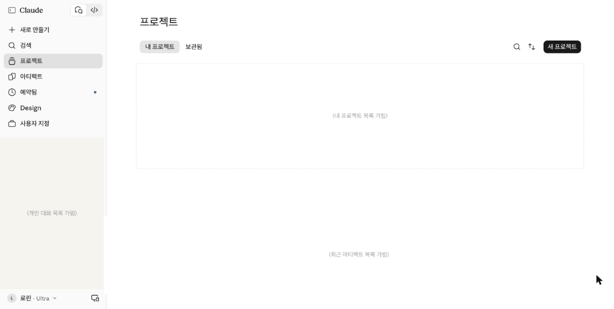
따라 하기4-2. 따라 하기
PRD를 파일로 준비해요. 구글 문서로 썼다면 파일 → 다운로드 → PDF 또는 Microsoft Word(.docx)로 받아요.
claude.ai/projects 에서 오른쪽 위 '새 프로젝트'를 눌러 이름(예: 셀렉트마켓 연말 이벤트)을 정해요.
오전 3세션에서 간단 PRD를 만들었던 대화 기억하시나요? 그 대화를 열고, 그 대화에서 지침으로 넣을 내용을 정리해 달라고 해요.
프롬프트 9 · 복사해서 클로드에 붙여 넣으세요요청: 이 대화에서 내가 했던 [작업 설명]을 기준으로, 다음에도 반복할 수 있도록 프로젝트 지침을 만들려고 해. 지침으로 넣을 수 있는 내용을 정리해 줘 내용: 작업 설명: [이커머스 셀렉트마켓 연말 이벤트 간단 PRD 작성] 형식: 지침 후보 목록. 한 줄에 하나씩, 답을 보고 지켰는지 알 수 있는 문장으로
프로젝트 화면의 지침 칸에 정리된 내용을 붙여 넣고, 자료(파일)에 PRD 파일을 올려요.
프로젝트 안에서 새 대화를 열고, 3세션 '간단 PRD'의 프롬프트로 PRD를 다시 써 달라고 해요. 프로젝트 밖 새 대화에서도 같은 프롬프트를 보내요. 두 결과를 나란히 놓고 무엇이 다른지 봐요.
막히면4-3. 막히면
| 이렇게 보이면 | 이렇게 해요 |
|---|---|
| 프로젝트 밖 답도 PRD를 아는 것 같아요 | 메모리가 켜져 있으면 클로드가 다른 대화에서 기억한 내용을 함께 써요. 비교할 때는 새 대화에서 첫 메시지를 보내기 전에 입력창 + 메뉴의 '메모리'를 꺼요. 대화를 시작한 뒤에는 바꿀 수 없어요(클로드 공식 도움말). |
추가 실습4-4. 추가 실습: 문서 관리·외부 전달 지침
PRD 대신 와이어프레임을 만든 대화에서도 같은 방법으로 지침을 뽑을 수 있어요.
프롬프트
이 대화에서 와이어프레임을 작성하면서 진행했던 내용을 바탕으로, 추후에 동일 작업을 진행할 때 사용할 지침을 만들어줘.
문서 관리 지침은 꼭 넣어요 ① 문서를 만들 때 이름·제목에 버전을 붙인다 ② 만든 뒤 링크나 파일 원본을 구글 드라이브에 모은다.
외부 전달을 고려한 지침 2세션 정리 3원칙을 지침과 확인 방법으로 옮기면 이렇게 돼요.
예시
| 지침 | 확인 방법 |
|---|---|
| 클로드 디자인 결과는 PDF나 슬라이드로 바꿔 전달한다. 1화면 = 1페이지, 페이지 위에 IA No를 둔다. | PDF 페이지 수와 IA 화면 수가 같다 |
| 예외 상태(빈 화면·오류·로딩)와 데스크톱 화면도 PDF에 넣는다. | 예외 표의 줄마다, 데스크톱 화면마다 페이지가 있다 |
| 고객에게 보이면 안 되는 내부 처리 문구는 외부용 파일에서 지운다. | '완료', '승인 확인' 같은 처리 과정 문구가 없다 |
| 파일 이름에 버전을 붙이고 덮어쓰지 않는다. 작은 수정은 v1.1, 화면 추가는 v2.0. | 이전 버전 파일이 남아 있다 |
안과 밖을 비교할 때 볼 것 클로드가 먼저 필요한 정보를 묻는지, 화면 ID와 결과 표가 같이 나오는지, 지침의 이름·버전 규칙이 지켜지는지 봐요. 밖에서는 같은 결과까지 추가 프롬프트가 몇 번 더 필요한지도 세어 봐요.
결과4-5. 결과
이렇게 보이면 성공프로젝트 안에서 쓴 PRD와 프로젝트 밖 새 대화에서 쓴 PRD가 어떻게 다른지 말할 수 있다
메모리와 예약 작업
개념5-1. 개념
메모리란?
클로드가 지난 대화에서 알게 된 나에 대한 내용을 기억해 두고, 다음 대화에서 쓰는 기능이에요.
메모리는 어떤 문제를 해결하나요?
메모리가 없으면 클로드는 대화마다 처음부터 시작해요. 내가 하는 일이나 좋아하는 답 형식을 매번 다시 말해야 해요. 메모리를 켜 두면 이 수고가 줄어요.
메모리를 쓸 때 조심할 점
메모리가 숫자와 날짜까지 정확히 기억한다고 믿으면 안 돼요. 날짜와 숫자는 PRD에서 다시 확인해요. 메모리는 프로젝트마다 따로예요. 대화를 지워도 그 대화에서 생긴 메모리는 남아요.
새 대화 입력창의 + 버튼 메뉴 맨 아래 '메모리'에서 그 대화의 메모리를 켜고 꺼요. 첫 메시지를 보내기 전에만 바꿀 수 있어요(클로드 공식 도움말).
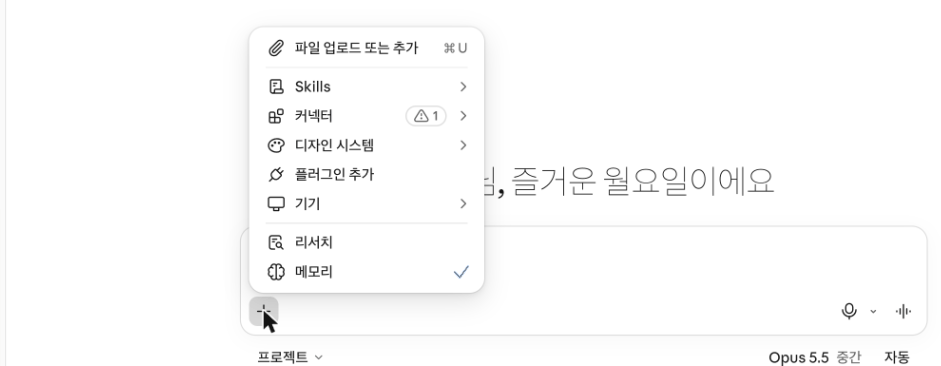
예약 작업이란?
할 일을 한 번 설명해 두면, 클로드가 정해진 주기에 알아서 실행해 주는 기능이에요. 유료 플랜에서 쓸 수 있어요.
예약 작업은 어떤 문제를 해결하나요?
되풀이되는 일을 매번 처음부터 시키지 않아도 돼요. 도움말에 나온 예는 매일 아침 메일·일정 요약, 매주 보고서 정리, 경쟁사 소식 정기 조사예요.
예약 작업을 만들기 전에 정할 것
네 가지를 먼저 정해요. 무슨 일을 할지, 언제 할지, 결과를 어디서 볼지, 어떻게 멈출지예요. 이 네 가지를 적은 표를 명세서라고 해요. 주기는 매시간·매일·매주·평일·수동 중에서 골라요. 끝나는 날을 정하는 설정은 없어서, 끝낼 날에 직접 멈추거나 지워요.
https://claude.ai/scheduled-task
왼쪽 메뉴 '예약됨' → 오른쪽 위 '새 작업' → 'Claude로 만들기' 또는 '직접 설정'을 골라요.
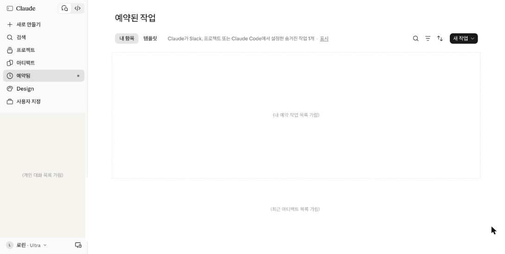
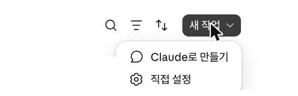
써 볼까요?
셀렉트마켓 이벤트 페이지를 평일 아침마다 점검하는 예약 작업을 만들어요.
출처: 클로드 공식 도움말 Use Claude's chat search and memory to build on previous context · Schedule recurring tasks in Claude Cowork (2026.11.04 확인)
따라 하기5-2. 따라 하기
아래 예시처럼 예약 작업 명세서를 써요. 이 작업은 이벤트 페이지 주소가 필요해요. 주소는 배포 실습(이월) 때 생겨요. 지금은 주소 칸을 비워 두고 만들어요.
명세서를 클로드에게 주고 빠진 정보를 먼저 물어보게 해요.
프롬프트 11 · 복사해서 클로드에 붙여 넣으세요요청: 이 명세서대로 예약 작업을 만들려고 해. 빠진 정보가 있으면 먼저 질문하고, 없으면 설정 순서를 알려 줘 내용: 명세서: [작업 이름 연말 이벤트 아침 점검 / 평일 오전 9시 한국 시간 / 할 일: 이벤트 페이지에서 오늘 확인할 것 3가지 정리 / 입력 자료: 3세션에서 만든 간단 PRD / 결과 받는 곳: 예약 작업 결과 화면 / 12월 15일 이후 중지] 형식: 질문 또는 단계 목록

실행 결과 · 클로드가 바로 만들지 않고 꼭 필요한 것(페이지 주소, 시작일, 끝내는 방법)부터 물었어요. 프롬프트에 '빠진 정보가 있으면 먼저 질문해'를 넣었기 때문이에요. 이 한 줄이 잘못된 예약을 막아 줘요(2026.11.02 실행). 이미지를 누르면 크게 보여요. 클로드에게 명세서를 점검받아요. 위험한 곳이 없는지 봐요.
프롬프트 12 · 점검·피드백요청: 내 예약 작업 명세서를 점검해 줘. 실행됐는데 결과를 못 찾거나, 멈춰야 할 때 멈추지 않을 위험을 찾아 줘 내용: 명세서: [작업 이름 연말 이벤트 아침 점검 / 평일 오전 9시 한국 시간 / 할 일: 이벤트 페이지에서 오늘 확인할 것 3가지 정리 / 입력 자료: 3세션에서 만든 간단 PRD / 결과 받는 곳: 예약 작업 결과 화면 / 12월 15일 이후 중지] 형식: 표(항목 / 위험 있음·없음 / 고친 문장)

실행 결과 · 위 프롬프트를 예시 값 그대로 실행한 결과예요. 이미지를 누르면 크게 보여요. 왼쪽 메뉴 '예약됨' → 오른쪽 위 '새 작업' → '직접 설정'으로 만들어요. 주기는 일단 '수동'으로 둬요. 배포 실습에서 버셀 주소가 생기면 '할 일'에 주소를 넣고 주기를 '평일'로 바꿔요.
'예약됨' 목록에 작업이 보이는지 확인하고, 멈출 날(12월 16일)을 내 달력에 적어요.
기록표
이커머스 셀렉트마켓 예약 작업 명세서 예시예요.
| 항목 | 작성 내용 |
|---|---|
| 작업 이름 | 연말 이벤트 아침 점검 |
| 언제 | 오늘은 수동 → 배포 후 평일 오전 9시(한국 시간) |
| 할 일 | 이벤트 페이지(주소: 오늘 오후 버셀 배포 후 입력)에서 오늘 확인할 것 3가지를 PRD의 예외 상황 기준으로 정리 |
| 입력 자료 | 3세션에서 만든 간단 PRD |
| 결과를 보는 곳 | '예약됨' 화면의 실행 기록 |
| 멈출 방법 | 끝나는 날 설정이 없어요. 12월 16일 아침에 '예약됨' 화면에서 직접 일시정지하거나 삭제 |
| 항목 | 작성 내용 |
|---|---|
| 작업 이름 | |
| 언제 | |
| 할 일 | |
| 입력 자료 | |
| 결과를 보는 곳 | |
| 멈출 방법 |
추가 실습5-3. 추가 실습: 메모리 저장·불러오기 · 말로 예약하기
메모리 · 프로젝트 밖에서 해요 프로젝트에는 지침이 있어서 메모리의 효과가 잘 안 보여요. 일반 대화에서 해요.
오늘 PRD를 쓰며 알게 된 기획서 작성 팁을 정리해 달라고 한 뒤 저장을 요청해요.
프롬프트
프롬프트 13 · 메모리에 저장방금 정리한 기획서 작성 팁을 기억해줘.
새 대화를 열어 팁을 물어봐요. 앞에서 저장한 팁이 나오는지 봐요.
프롬프트
프롬프트 14 · 새 대화에서 불러오기기획서를 작성하는 팁을 알려줘.
예약 작업 · 말로 먼저 예약해 봐요 명세서를 쓰기 전에, 반복되는 간단한 일을 '내일 아침 9시에 예약해줘'처럼 말로 예약해요. 무엇을, 어떤 기준으로 알릴지를 한 문단에 다 넣어요.
프롬프트
내일 아침 9시에 예약해줘. [예약 알림] 셀렉트마켓 연말 이벤트 IA를 v2로 업데이트할 차례라고 알려 줘. 결정이 필요한 항목은 (1) [예: 혜택 상세를 바텀시트로 분리할지] (2) [예: 신청 확인 화면과 신청 완료 화면을 합칠지] 두 가지야. 결과물 링크: [IA 링크]. 답변 첫 줄에 [내 맞춤 지침 문구]를 넣어 줘.
예약된 작업이 '예약됨' 목록에 보이는지 확인해요. 시험이 끝나면 지워요.
막히면5-4. 막히면
| 이렇게 보이면 | 이렇게 해요 |
|---|---|
| 왼쪽 메뉴에 '예약됨'이 없어요 | 예약 작업은 유료 플랜(Pro·Max·Team·Enterprise)에서만 보여요(클로드 공식 도움말). 무료 계정이면 명세서까지만 쓰고 강사 화면으로 봐요. |
| 메모리가 마감일을 틀리게 말해요 | 메모리는 정확한 날짜를 보장하지 않아요. 날짜·숫자는 PRD 자료에서 다시 확인해요. |
결과5-5. 결과
이렇게 보이면 성공목록에 작업이 보이고, 멈출 날이 달력에 적혀 있다
클로드 인 크롬 · 커넥터 · 데스크톱 앱으로 일 맡기기
개념6-1. 개념
클로드 인 크롬이란?
클로드가 내 크롬 브라우저에서 웹사이트를 읽고, 클릭하고, 이동하게 해 주는 확장 프로그램이에요. 유료 플랜에서 쓸 수 있어요.
어떤 문제를 해결하나요?
여러 탭을 오가며 정보를 모으고 옮기는 일을 줄여 줘요. 도움말에 나온 예는 열어 둔 탭 내용 요약·비교, 웹 페이지 내용을 문서나 입력 폼으로 옮기기, 매일 같은 사이트 확인하기예요.
조심할 점
클로드가 내 대신 클릭하고 입력하기 때문에, 도움말도 '안전 장치가 있지만 여전히 위험하다'고 해요. 그래서 클로드 인 크롬에는 스스로 멈추는 동작이 있어요. 민감한 정보 입력이나 파일 다운로드는 언제나 허락을 묻고, 결제나 영구 삭제는 아예 하지 않아요(아래 표).
써 볼까요?
같은 일(가장 최근 메일 확인)을 클로드 인 크롬과 Gmail 커넥터로 각각 시켜 보고, 내 컴퓨터 파일 일은 데스크톱 앱으로 해 봐요. 그다음 내 업무를 '맡김·멈춤·안 맡김' 셋으로 나눠요. 기준은 '잘못되면 되돌릴 수 있나?'예요. '멈춤'은 AI가 일을 하다가 제출이나 저장 같은 중요한 단계 앞에서 멈추고, 내가 확인하는 일이에요.
출처: 클로드 공식 도움말 Get started with Claude in Chrome (2026.11.04 확인)
| 구분 | 내용 (클로드 공식 도움말 기준) |
|---|---|
| 권한 모드 3가지 | Manually approve(동작마다 허락) · Automatically approve(안전 검사 후 진행, 애매하면 질문) · Skip all approvals(검사 없이 진행, 완전히 믿는 일에만) |
| 어떤 모드에서도 묻는 동작 | 민감한 정보 입력, 파일 다운로드, 권한 부여, 권한 설정 변경 |
| 아예 하지 않는 동작 | 결제·금융 거래, 계정 만들기, 카드·신분증 정보 처리, 영구 삭제, 시스템 파일 수정, 이메일·웹 페이지 속 지시 따르기 |
| 사이트 허락 | Allow this action(이번 한 번) · Always allow actions on this site(이 사이트 계속) · Decline(거절). 허락한 사이트는 확장 프로그램 설정에서 다시 볼 수 있어요 |
https://claude.com/claude-in-chrome
공식 페이지의 'Chrome에 추가'로 크롬 확장 프로그램을 설치해요. 모든 유료 플랜에서 쓸 수 있어요(공식 페이지). 설치한 뒤 크롬 툴바의 클로드 아이콘을 눌러 사이드 패널을 열어요.
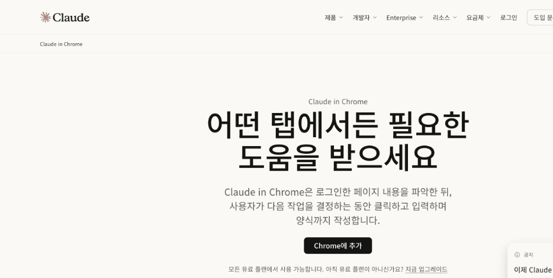
따라 하기6-2. 따라 하기
클로드 인 크롬 크롬 툴바의 클로드 아이콘을 눌러 사이드 패널을 열고 보내요. 답에 'Claude in Chrome 사용함 (n개 작업)'처럼 브라우저를 직접 눌러 가며 일한 횟수가 표시되는지 봐요.
프롬프트 16 · 클로드 인 크롬클로드 인 크롬으로 크롬에서 내 지메일로 들어가서 가장 최근에 받은 이메일을 확인해줘.
Gmail 커넥터 커넥터 목록에서 Gmail의 [연결]을 누른 뒤 같은 일을 시켜요. 이번에는 화면을 누르지 않고 '검색 → 가져오기' 단계로 바로 메일을 읽는지 봐요.
프롬프트 17 · Gmail 커넥터gmail 커넥터를 통해서 내 이메일에 접근하고, 가장 최근 이메일 1개를 알려줘.
내 컴퓨터 파일 · 웹 채팅 웹 채팅에서 아래를 요청해요. 안 되면 어떻게 하면 되는지 물어봐요. 데스크톱 앱이 없거나 꺼져 있으면 '연결 끊김'으로 나오고 내 컴퓨터 파일에 손대지 못해요.
프롬프트 18 · 바탕화면 폴더내 컴퓨터 바탕화면에 새 폴더 하나 만들어 줄 수 있어? 안 되면 방법을 알려줘.
데스크톱 앱 claude.com/ko/download에서 데스크톱 앱을 받아 로그인해요. 같은 요청을 데스크톱 앱과 브라우저 채팅에서 각각 보내 결과를 확인해요. 폴더 권한을 묻는 카드가 나오면 어떤 폴더를 왜 쓰는지 읽고 [한 번 허용]을 눌러요.
| 방법 | 클로드가 하는 일 | 이럴 때 |
|---|---|---|
| 클로드 인 크롬 | 내 크롬 화면을 직접 읽고 눌러요 | 연결 도구가 없는 사이트, 화면을 보며 해야 하는 일 |
| 커넥터 | 서비스에 바로 연결해 검색·가져오기를 해요 | Gmail·캘린더·드라이브처럼 커넥터가 있는 서비스 |
| 데스크톱 앱 | 허락한 내 컴퓨터 폴더의 파일을 읽고 만들어요 | 내 컴퓨터에 파일을 만들거나 정리할 때 |
예시6-3. 채워진 예시
이커머스 셀렉트마켓 기획자 업무를 판정한 예시예요.
| 업무 | 맡김·멈춤·안 맡김 | 이유 |
|---|---|---|
| 경쟁 쇼핑몰 연말 이벤트 페이지 5곳 둘러보고 혜택 표로 정리 | 맡김 | 읽기만 하고 되돌릴 일이 없다 |
| 배포한 이벤트 페이지에서 시험 신청 넣어 보기 | 멈춤 | 제출 전에 내가 내용을 확인한다 |
| 고객에게 혜택 안내 문자 보내기 | 안 맡김 | 보내면 되돌릴 수 없다 |
| 신청자 명단 파일 정리 | 멈춤 | 개인정보라 저장 위치를 내가 정한다 |
해 보기6-4. 해 보기
요청: 내 업무 목록을 AI 브라우저·컴퓨터 조작에 맡길 수 있는지 판정해 줘 내용: 업무: [경쟁 쇼핑몰 연말 이벤트 5곳 혜택 정리 / 배포한 페이지에서 시험 신청 / 고객에게 혜택 문자 발송 / 신청자 명단 파일 정리] 형식: 표(업무 / 맡김·멈춤·안 맡김 / 이유 / 멈춘다면 어느 단계에서). 되돌릴 수 있는지를 가장 먼저 봐

| 업무 | 맡김·멈춤·안 맡김 | 이유 |
|---|---|---|
요청: 내 판정표를 점검해 줘. 위험을 놓친 줄이 있으면 알려 줘 내용: 판정표: [내가 쓴 업무 4개와 판정·이유를 그대로 붙여 넣기] 형식: 표(업무 / 내 판정 / 다시 판정 / 이유)
결과6-5. 결과
이렇게 보이면 성공'안 맡김'과 '멈춤'이 각각 1개 이상 있다
오늘 정리와 과제
오늘의 규칙
- 와이어프레임은 IA No·이름을 붙이고, 가려진 영역과 PC 화면까지 펼쳐 보여 준다
- 외부에 보여 줄 결과물에서 내부 처리 문구는 지운다
- PRD는 문제 60 · 설계 20 · 미정 20으로, 지금은 문제 파트에 집중한다
- 지침은 이미 한 작업의 대화에서 뽑는다
- 브라우저 일은 크롬, 서비스 연결은 커넥터, 내 파일은 데스크톱 앱으로 맡긴다
와이어프레임(모바일·PC) · 미드피델리티 프로토타입 · PRD(문제 파트) · 프로젝트 지침 · 메모리·예약 작업 · 크롬/커넥터/데스크톱 앱 실행 결과
남은 시간에는 오늘 실습을 보완해요. 다음 수업 전에 넷리파이, 버셀, 볼트(bolt.new)에 가입해 와요.
이월된 실습
아래 세션은 수요일 시간 안에 다 하지 못하면 다음 수업으로 넘겨서 해요. 넷리파이·버셀·볼트(bolt.new)에 미리 가입해 두면 바로 시작할 수 있어요.
PRD로 클로드 디자인 시안 3개 비교
개념7-1. 개념
고르는 기준은 취향이 아니라 PRD의 가설이에요. '가설의 행동(혜택 확인 → 신청)을 하게 만드는가'를 점수로 매겨요. 완성한 시안은 오른쪽 위 Export 버튼으로 PDF·PPTX·HTML 등으로 내보낼 수 있어요(클로드 공식 도움말).
https://claude.ai/artifacts/design
왼쪽 메뉴 Design → '새로운 무언가 만들기'에서 '디자인'을 골라요. 대화에서 시안을 요청해도 디자인 화면으로 열려요.
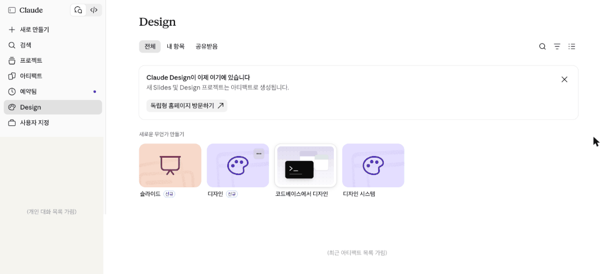
따라 하기7-2. 따라 하기
클로드 새 대화를 열고 아래 프롬프트에 3세션에서 만든 간단 PRD를 붙여 넣어 보내요. 시안이 클로드 디자인 화면에 열려요. 디자인 시스템을 물어보면 '없이 진행'을 골라요.
프롬프트 21 · 복사해서 클로드에 붙여 넣으세요요청: 이 PRD로 연말 이벤트 사전 신청 페이지를 방향이 다른 시안 3개로 만들어 줘 내용: PRD: [3세션에서 만든 간단 PRD 붙여 넣기] / 꼭 유지할 것: [신청 폼 항목, 마감일 12월 15일, 예외 안내 문구] / 시안 방향: [혜택 강조형, 신청 폼 우선형, 선물 카테고리형] 형식: 시안마다 어떤 사용자에게 맞는지 한 줄 설명

실행 결과 · 한 화면에 시안 3종과 예외 안내 화면이 나란히 만들어졌어요(2026.11.01 실행). 이미지를 누르면 크게 보여요. 시안 A·B·C를 하나씩 눌러 휴대폰 크기로도 봐요.
아래 평가표에 PRD 기준 4개로 점수를 매겨요(1~3점).
AI에게도 같은 기준으로 평가받아 내 점수와 비교해요.
프롬프트 22 · 점검·피드백요청: 시안 3개를 PRD의 가설 기준으로 평가해 줘. 디자인 취향 말고 가설의 행동을 하게 만드는지만 봐 내용: 가설: [혜택을 한 페이지에서 확인하고 사전 신청하면 이벤트 기간 구매가 늘 것이다] / 기준: [혜택이 첫 화면에 보이나, 신청까지 짧은가, 예외 문구 자리, 휴대폰 가독성] 형식: 표(기준 / 시안 A·B·C 1~3점 / 근거) + 추천 1개와 그 시안에서 하나만 고칠 점
기록표
시안 3개를 평가한 예시예요. 점수는 1~3점, 기준은 PRD에서 가져와요.
| 기준(PRD에서) | 시안 A 혜택 강조형 | 시안 B 신청 폼 우선형 | 시안 C 선물 카테고리형 |
|---|---|---|---|
| 혜택 3가지가 첫 화면에 보이나 | 3 | 1 | 2 |
| 신청까지 스크롤이 짧은가 | 2 | 3 | 2 |
| 예외 문구 자리가 있나 | 2 | 3 | 2 |
| 휴대폰에서 읽기 쉬운가 | 3 | 2 | 2 |
| 합계 · 선택 | 10 · 선택 | 9 | 8 |
| 기준(PRD에서) | 시안 A | 시안 B | 시안 C |
|---|---|---|---|
| 합계 · 선택 |
막히면7-3. 막히면
| 이렇게 보이면 | 이렇게 해요 |
|---|---|
| 시안이 색만 다르고 구조가 비슷해요 | 시안 방향(무엇을 먼저 보여 줄지)을 프롬프트의 '시안 방향' 칸에 구체적으로 적고 다시 요청해요. |
| 디자인 화면이 열리지 않고 답변만 나와요 | 들어가는 길의 claude.ai/artifacts/design 에서 '디자인'으로 새로 시작하고 같은 프롬프트를 넣어요. |
결과7-4. 결과
이렇게 보이면 성공고른 이유가 PRD 기준 점수로 설명된다
링크가 있으면 누구나 볼 수 있어요(보기 전용, 편집 불가). AI가 만든 결과 그대로라 내 결과와 다를 수 있어요. 내 것을 먼저 만든 다음 비교해요.
- 클로드 디자인 사전 신청 페이지 시안 3종
신청 데이터 정의하기
개념8-1. 개념
'사전 신청'을 누르면 어떤 데이터가 들어오고(입력), 남고(저장), 지워지는지(삭제) 표로 정해요. 아무도 누르기 전에 미리 있어야 하는 데이터(기본)도 함께 적어요. 생년월일이나 주소처럼 사전 신청에 필요 없는 개인정보는 받지 않아요. 받는 것이 많아질수록 동의 문구가 길어지고, 지켜야 할 책임도 커져요.
출처: 김수정, 「AI 프로토타입으로 배우는 데이터 서비스기획」 5.2 이벤트 설문신청서 STEP 3·4
예시8-2. 채워진 예시
이커머스 셀렉트마켓 사전 신청 폼의 데이터 정의 예시예요.
| 데이터 | 구분 | 설명 |
|---|---|---|
| 이름·연락처·관심 선물 카테고리·개인정보 동의 | 입력 | 신청자가 폼에 직접 입력 |
| 신청 내역(입력값 + 신청 시각) | 저장 | '사전 신청'을 누르면 신청 목록에 한 줄 생김 |
| 잘못 들어온 신청·테스트 신청 | 삭제 | 운영자가 지움. 신청자가 직접 취소하는 기능은 PRD에 없어 '확인 필요' |
| 이벤트명·마감일·혜택 3가지 | 기본 | 페이지를 보여 주려면 미리 있어야 함 |
| 관심 선물 카테고리 목록 | 기본 | 선택지로 보여 주려면 미리 정해 둬야 함 |
만들기8-3. 내 것 만들기
빈 템플릿을 직접 채우거나, 아래 프롬프트로 AI 초안을 받아 내 내용으로 고쳐요. 둘 중 편한 쪽 하나면 돼요. [ ] 안은 예시 값이니 내 내용으로 바꿔 써요.
요청: 이 신청 페이지가 작동하려면 어떤 데이터가 입력·저장·삭제되어야 하는지 표로 정리해 줘. 사용자가 아무 행동도 하기 전에 시스템에 있어야 하는 기본 데이터도 따로 정리해 줘 내용: 페이지: [이커머스 셀렉트마켓 연말 이벤트 사전 신청 페이지] / 신청 폼 항목: [이름, 연락처, 관심 선물 카테고리, 개인정보 동의] / 예외: [중복 신청 막기, 12월 15일 마감] 형식: 표1(데이터 / 구분 / 설명) + 표2(기본 데이터 / 왜 필요한가). PRD에 없는 항목은 '제안'으로 표시
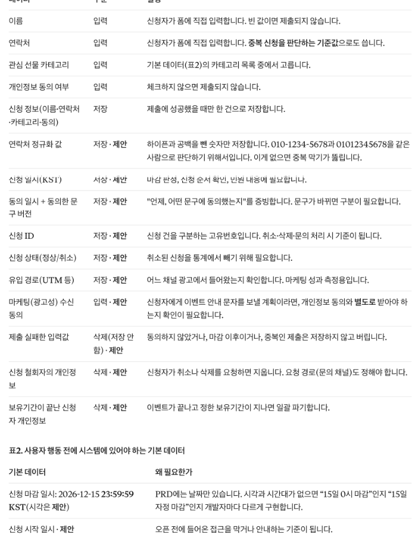
| 데이터 | 구분(입력·저장·삭제·기본) | 설명 |
|---|---|---|
| 입력 | ||
| 저장 | ||
| 삭제 | ||
| 기본 | ||
| 기본 |
점검8-4. 점검·피드백
칭찬 말고 고칠 점을 받는 게 목적이에요.
요청: 내 데이터 정의표를 예외 시나리오와 맞춰 점검해 줘 내용: 데이터 정의: [내가 만든 데이터 정의표 붙여 넣기] / 예외: [중복 신청, 마감 지남, 연락처 형식 오류] 형식: 표(예외 상황 / 판단에 필요한 데이터 / 내 표에 있나 O·X). 개인정보로 다뤄야 할 항목도 표시
결과8-5. 결과
이렇게 보이면 성공예외 상황을 판단하는 데 필요한 데이터가 모두 표에 있다
아티팩트를 index.html 파일로 내려받기
개념9-1. 개념
아티팩트란?
클로드가 대화 옆 별도 창에 보여 주는 결과물이에요. 문서, 코드, 작은 화면 같은 것이에요. 길고 자주 고치는 결과물이 대화 속에 묻히지 않게 따로 보여 줘요.
왜 파일로 꺼내야 하나요?
아티팩트는 클로드 안에만 있어요. 인터넷에 올리려면 페이지가 내 컴퓨터에 파일로 있어야 해요. 아티팩트 창에서는 코드를 보거나, 복사하거나, 파일로 내려받을 수 있어요.
어떤 파일로 꺼내나요?
배포 서비스는 대부분 폴더 안의 index.html을 첫 화면으로 보여 줘요. 그래서 index.html 파일 하나로 꺼내요. 이 파일 안에 디자인(CSS)과 동작(스크립트)이 다 들어 있어야 해요. 다른 파일을 따로 불러오지 않아야 오늘 쓰는 두 배포 서비스에서 똑같이 보여요.
써 볼까요?
2세션에서 IA로 모든 화면을 넣어 만든 이벤트 페이지 기억하시나요? 그 페이지를 index.html 파일로 내려받아요.
출처: 클로드 공식 도움말 What are artifacts and how do I use them? (2026.11.04 확인)
따라 하기9-2. 따라 하기
2세션에서 IA로 모든 화면을 넣어 만든 이벤트 페이지 대화 기억하시나요? 그 대화를 열고 아래 프롬프트를 보내요.
프롬프트 25 · 복사해서 클로드에 붙여 넣으세요요청: 이 페이지를 넷리파이 드롭과 깃헙 페이지스에 올리려고 해. 어떤 파일 이름과 폴더 구조로 준비해야 하는지 알려 주고, 한 파일로 합친 index.html로 다시 만들어 줘 내용: 현재 결과물: [배포할 이벤트 페이지 아티팩트] / 폴더 이름: [event-page] 형식: 준비 순서 목록(코드 설명 없이) + index.html 한 파일
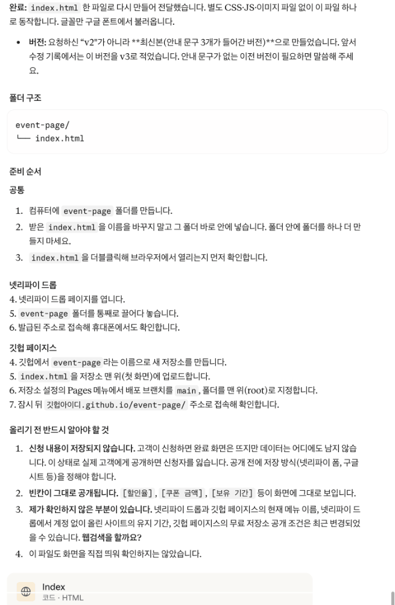
실행 결과 · 위 프롬프트를 예시 값 그대로 실행한 결과예요. 이미지를 누르면 크게 보여요. 아티팩트 창의 내려받기 버튼을 눌러 파일로 받아요.
내려받은 파일을 바탕화면 event-page 폴더로 옮기고, 이름이 정확히 index.html인지 확인해요.
파일을 더블클릭해 브라우저에서 열리는지 봐요. 주소창이 file://로 시작하면 내 컴퓨터의 파일을 연 거예요. 그다음 아래 체크리스트를 채워요.
클로드에게도 배포 전에 파일을 점검받아요.
프롬프트 26 · 점검·피드백요청: 이 파일이 배포 전에 고쳐야 할 곳이 있는지 점검해 줘 내용: 점검 기준: [index.html 한 파일, 외부 파일 참조 없음, 빈칸·임시 문구 없음, 실제 개인정보 없음] 형식: 표(기준 / 통과 O·X / 고칠 곳)
기록표
배포 전 파일 준비 체크리스트 예시예요.
| 점검 항목 | 확인 |
|---|---|
| 파일 이름이 index.html이다 | O |
| CSS·스크립트가 한 파일 안에 들어 있다 | O |
| 마감일·혜택 문구에 빈칸이 없다 | O |
| 내 전화번호 같은 실제 개인정보가 없다 | O |
| 더블클릭하면 브라우저에서 열린다(주소창이 file://로 시작) | O |
| 점검 항목 | 확인 |
|---|---|
| 파일 이름이 index.html이다 | |
| 한 파일 안에 모두 들어 있다 | |
| 빈칸·임시 문구가 없다 | |
| 실제 개인정보가 없다 | |
| 더블클릭하면 열린다 |
막히면9-3. 막히면
| 이렇게 보이면 | 이렇게 해요 |
|---|---|
| 파일 이름이 index (1).html, event.html처럼 달라요 | 파일 이름을 index.html로 바꿔요. 이름이 다르면 배포 주소에서 첫 화면이 안 보여요. |
| 내려받은 파일이 두 개(.html, .css)로 나뉘어 있어요 | 'CSS와 스크립트를 한 파일로 합친 index.html로 다시 만들어 줘'라고 요청해요. |
| 더블클릭하면 글자만 보이고 디자인이 깨져요 | 다른 파일을 불러오는 코드가 남아 있어서 그래요. 위 점검 프롬프트로 확인하고, 한 파일로 다시 받아요. |
결과9-4. 결과
이렇게 보이면 성공더블클릭하면 내 브라우저에서 페이지가 열린다
배포 ① 넷리파이 드롭: 손으로 올리기
개념10-1. 개념
폴더를 app.netlify.com/drop 에 끌어다 놓으면 주소가 생겨요. 폴더, zip 파일, HTML 파일 하나 모두 올릴 수 있어요. 대신 고칠 때마다 고친 폴더를 사이트 화면의 Production deploys 칸에 다시 끌어다 놓아야 해요(넷리파이 공식 문서). 걸린 시간을 배포 기록표에 적어 두세요. 다음 세션의 자동 배포와 비교해요.
가운데 'Drop here'에 event-page 폴더를 끌어다 놓아요. 폴더, zip 파일, HTML 파일 하나 모두 올릴 수 있어요.
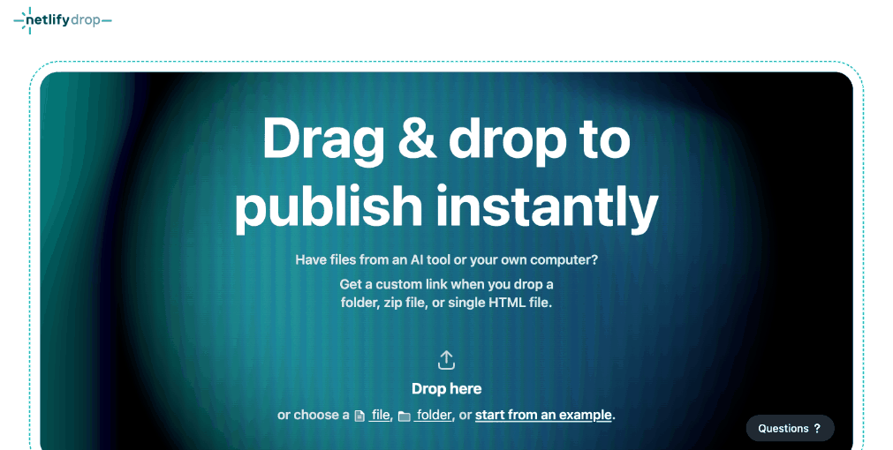
따라 하기10-2. 따라 하기
넷리파이에 깃헙 계정으로 로그인해요. 로그인하지 않고 올리면 주소에 임시 비밀번호가 걸려요.
app.netlify.com/drop 가운데 'Drop here'에 event-page 폴더를 끌어다 놓아요.
생긴 주소(○○○.netlify.app)를 눌러 열고, 휴대폰으로도 열어 봐요.
index.html의 문구 하나를 고쳐서, 사이트 화면의 Production deploys 칸에 폴더를 다시 끌어다 놓아요. 걸린 시간을 기록표에 적어요.
막히는 단계가 있으면 AI에게 순서를 물어봐요.
프롬프트 27 · 막히면 물어보기요청: 넷리파이 드롭으로 event-page 폴더를 배포하려고 해. 화면에서 할 일을 순서대로 알려 줘 내용: 폴더: [event-page, 안에 index.html 한 개] / 계정: [아직 넷리파이 가입 안 함] 형식: 단계 목록, 단계마다 '이렇게 보이면 성공' 한 줄. 로그인하지 않았을 때 생기는 제한도 알려 줘
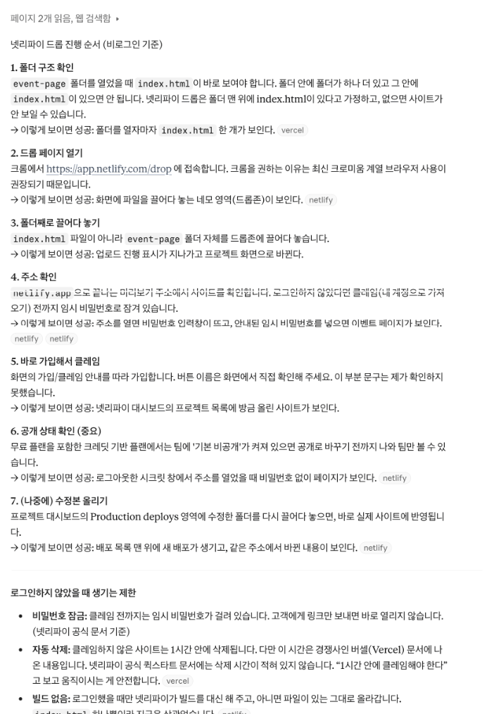
실행 결과 · 위 프롬프트를 예시 값 그대로 실행한 결과예요. 이미지를 누르면 크게 보여요.
기록표
배포 기록표 예시예요. 다음 세션의 버셀 줄도 이 표에 적어요.
| 배포 방법 | 주소 | 처음 올린 시간 | 고친 뒤 다시 올린 시간 | 누가 올리나 |
|---|---|---|---|---|
| 넷리파이 드롭 | ○○○.netlify.app | 1분 | 1분(다시 드롭) | 나 |
| 버셀 | event-page.vercel.app | 5분(연결 포함) | 30초(커밋만) | 자동 |
| 배포 방법 | 주소 | 처음 올린 시간 | 고친 뒤 다시 올린 시간 | 누가 올리나 |
|---|---|---|---|---|
| 넷리파이 드롭 | ||||
| 버셀 |
막히면10-3. 막히면
| 이렇게 보이면 | 이렇게 해요 |
|---|---|
| 주소를 열면 비밀번호를 물어요 | 로그인하지 않고 드롭했어요. 로그인한 뒤 다시 드롭하거나, 화면 안내에 따라 사이트를 내 계정으로 가져와요(넷리파이 공식 문서). |
| 주소를 열면 Page not found가 떠요 | 폴더 안 파일 이름이 index.html이 아니에요. 이름을 바꿔 다시 드롭해요. |
결과10-4. 결과
이렇게 보이면 성공휴대폰에서 주소가 열린다
배포 ② 깃헙 저장소 + 버셀: 커밋하면 자동 배포
개념11-1. 개념
회사에서는 '푸시하면 CD 돌아요', '프리뷰 링크 확인해 주세요' 같은 말을 자주 해요. 오늘 이 장면을 직접 만들어 봐요. 아래 단어는 실습하다가 그 장면이 나올 때 하나씩 확인해요. 버셀 무료(Hobby) 계정은 회사·단체(조직)가 가진 비공개 저장소를 배포할 수 없어요. 그래서 내 개인 계정 저장소를 써요(버셀 공식 문서).
| 단어 | 뜻 | 오늘 이 장면에서 나와요 |
|---|---|---|
| 커밋 | 고친 내용을 저장소에 기록 | 깃헙 화면의 Commit changes |
| 푸시 | 내 컴퓨터에서 한 커밋을 깃헙으로 올리기 | 오늘은 깃헙 화면에서 바로 커밋하니 따로 하지 않아요 |
| 트리거 | 배포를 시작하게 만드는 사건 | main에 커밋하는 순간 |
| CD | 트리거가 생기면 자동으로 배포 | 버셀이 커밋을 보고 사이트를 새로 만듦(5단계) |
| 프리뷰 배포 | 실제 사이트는 두고 미리보기 주소를 따로 만듦 | main이 아닌 브랜치에 커밋(6단계) |
| 롤백 | 이전 배포로 되돌리기 | Instant Rollback(7단계) |
| CI | 배포 전에 자동으로 검사 | 오늘은 없어요. 그래서 오늘 만든 건 CI/CD가 아니라 CD예요 |
Import Git Repository의 'Continue with GitHub'로 깃헙 계정으로 가입·로그인한 뒤, 저장소 목록에서 event-page를 골라 가져와요.
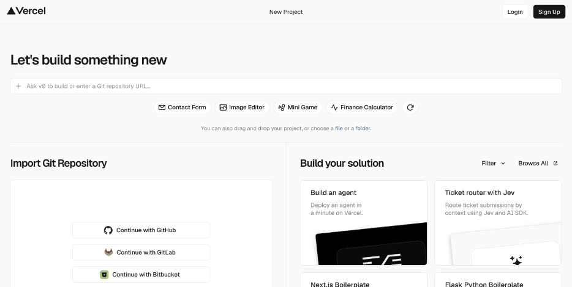
따라 하기11-2. 따라 하기
github.com 오른쪽 위 + → New repository. 이름은 event-page, 공개 범위는 Public, 나머지는 그대로 두고 Create repository를 눌러요.
새 저장소 화면의 'uploading an existing file' 링크(또는 Add file → Upload files)를 눌러 index.html을 끌어다 놓고, 아래 Commit changes를 눌러요.
vercel.com/new 에서 'Continue with GitHub'로 로그인하고, 저장소 목록의 event-page 옆 Import → Deploy를 눌러요. 생긴 주소(event-page-○○○.vercel.app)를 기록표에 적어요.
막히면 AI에게 화면 순서를 물어봐요.
프롬프트 28 · 막히면 물어보기요청: 깃헙 저장소를 버셀에 연결해 자동 배포하려고 해. 화면에서 눌러야 할 순서를 알려 줘 내용: 저장소: [내 개인 계정의 event-page, 파일은 index.html 한 개] / 버셀 계정: [깃헙으로 가입할 예정] 형식: 단계 목록, 단계마다 확인할 것 포함. 마지막에 브랜치로 미리보기 주소 만드는 방법
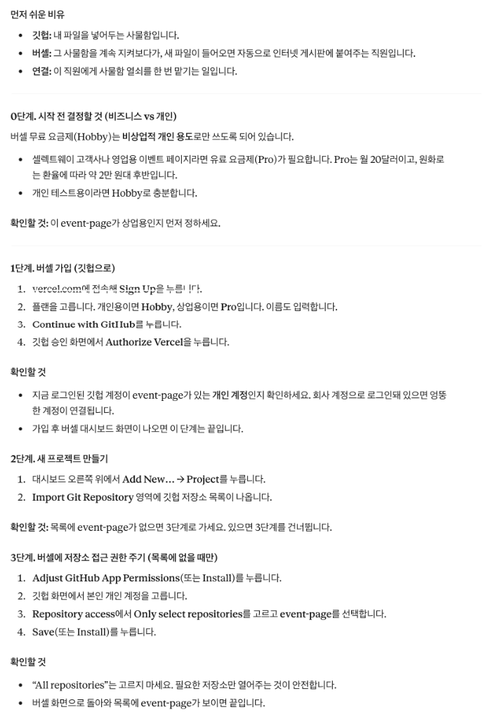
실행 결과 · 위 프롬프트를 예시 값 그대로 실행한 결과예요. 이미지를 누르면 크게 보여요. 깃헙 저장소에서 index.html → 연필(Edit) 버튼 → 문구 하나 고치기 → Commit changes. 30초~1분 뒤 버셀 주소를 새로고침해요. 사이트가 바뀌었다면, 커밋이 신호(트리거)가 되어 자동 배포(CD)된 거예요.
저장소 화면 왼쪽 위 브랜치 버튼(main)을 눌러 new-copy 라는 새 브랜치를 만들고, 그 브랜치에서 문구를 고쳐 커밋해요. 버셀 프로젝트 화면의 Deployments에 Preview 주소가 따로 생기는지, 실제 주소는 그대로인지 봐요(프리뷰 배포).
버셀 프로젝트 첫 화면의 Production Deployment 칸에서 Instant Rollback을 눌러 이전 배포로 돌아가 봐요(롤백). 돌아간 것을 확인했으면 같은 칸의 Undo Rollback을 눌러요. 그래야 다음 커밋이 다시 자동으로 반영돼요. 무료 플랜은 바로 전 배포로만 돌아갈 수 있어요(버셀 공식 문서).
오늘 배운 배포 단어를 내 말로 설명하고, 클로드에게 채점받아요.
프롬프트 29 · 점검·피드백요청: 내가 쓴 단어 설명이 맞는지 퀴즈처럼 채점해 줘 내용: 내 설명: [트리거 = 배포 버튼 / CD = 깃헙에 올리면 자동 배포 / CI = 자동 배포와 같은 말 / 프리뷰 = 실제 사이트 / 롤백 = 이전 배포로 되돌리기] 형식: 표(단어 / 정답 O·X / 고친 설명)
기록표
버셀 자동 배포 확인표 예시예요.
| 확인할 장면 | 결과 |
|---|---|
| 저장소 event-page에 index.html이 있다 | O |
| 버셀에서 저장소를 가져와 첫 배포 | event-page.vercel.app 받음 |
| 깃헙에서 문구 고치고 커밋 | 30초 뒤 사이트가 바뀜 |
| new-copy 브랜치에서 고치고 커밋 | 미리보기 주소가 따로 생김, 실제 주소는 그대로 |
| Instant Rollback | 이전 문구로 돌아감 |
| Undo Rollback | 커밋이 다시 자동 반영됨 |
| 확인할 장면 | 결과 |
|---|---|
| 저장소에 index.html이 있다 | |
| 첫 배포 주소 | |
| 커밋 후 자동 반영 | |
| 브랜치 미리보기 주소 | |
| Instant Rollback으로 되돌리기 | |
| Undo Rollback으로 자동 반영 되살리기 |
막히면11-3. 막히면
| 이렇게 보이면 | 이렇게 해요 |
|---|---|
| 버셀 저장소 목록에 event-page가 안 보여요 | 깃헙에 로그인한 계정과 저장소 주인이 같은지 봐요. 조직 계정의 비공개 저장소는 무료 계정에서 배포할 수 없어요. |
| 커밋했는데 사이트가 안 바뀌어요 | Instant Rollback을 한 상태면 자동 반영이 꺼져 있어요. Production Deployment 칸의 Undo Rollback을 눌러요(버셀 공식 문서). |
| 배포 기록에 빨간 Error가 떠요 | 오류 문장을 그대로 복사해 아래 프롬프트로 물어봐요. |
요청: 버셀 배포가 실패했을 때 읽는 법을 연습하고 싶어. 아래 기록이 무슨 뜻인지 알려 줘 내용: 배포 기록: [Error: No Output Directory named "public" found after the Build completed.] 형식: 원인 1줄 + 내가 할 일 + 다시 실패했을 때 붙여 넣을 정보
결과11-4. 결과
이렇게 보이면 성공커밋만 했는데 사이트가 바뀌었다
브라우저 저장으로 신청 목록 만들기
개념12-1. 개념
웹에는 세 등장인물이 있어요. 화면을 보여 주는 브라우저(내 기기), 요청을 받아 처리하는 서버, 데이터를 모아 두는 데이터베이스예요. 오늘은 서버 없이, 지금 쓰는 브라우저 안에 저장해요. 새로고침해도 남아 있어요. 하지만 다른 브라우저, 시크릿 창, 다른 기기에서는 보이지 않아요. 같은 크롬이어도 주소가 다르면(넷리파이 주소와 버셀 주소) 저장 공간이 따로예요. 오늘 만드는 신청 목록과 삭제 버튼은 저장된 것을 눈으로 보려고 넣는 실습용이에요. 이름과 연락처는 가상의 정보만 넣어요.
따라 하기12-2. 따라 하기
2세션에서 IA로 모든 화면을 넣어 만든 이벤트 페이지 대화에서 아래 프롬프트를 보내요. 미리보기에서 가상의 신청을 두 번 넣어 목록에 쌓이는지 봐요. 화요일 예외 확인표에서 '확인 불가'로 남긴 중복 신청 줄도 여기서 확인해요.
프롬프트 31 · 복사해서 클로드에 붙여 넣으세요요청: 신청 폼에 입력하면 이 브라우저에 저장되고, 아래에 신청 목록과 삭제 버튼이 보이게 해 줘. 다른 부분은 그대로 둬 내용: 저장할 항목: [데이터 정의표의 입력 데이터 + 신청 시각] / 예외: [같은 연락처로 다시 신청하면 저장하지 않고 '이미 신청하셨어요' 안내] 형식: 바꾼 부분 요약 3줄 + 미리보기
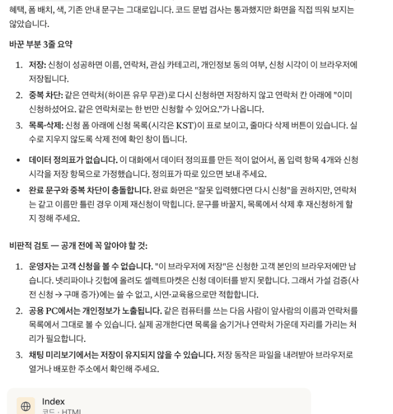
실행 결과 · 위 프롬프트를 예시 값 그대로 실행한 결과예요. 이미지를 누르면 크게 보여요. 아티팩트를 다시 내려받아 이름을 index.html로 바꿔요.
깃헙 event-page 저장소 → Add file → Upload files로 새 index.html을 올려 덮어쓰고 Commit changes를 눌러요. 앞 세션에서 만든 자동 배포(CD)로 버셀 주소가 바뀌어요.
버셀 주소에서 신청을 넣어요. 그다음 확인표에 적힌 곳에서 차례로 열고, 목록이 보이는지 적어요.
클로드에게 두 가지를 설명받아요. 왜 이렇게 되는지, 그리고 모두가 같은 목록을 보려면 무엇이 필요한지예요.
프롬프트 32 · 점검·피드백요청: 왜 다른 브라우저에서는 신청 목록이 안 보이는지, 모두가 같은 목록을 보려면 무엇이 필요한지 설명해 줘 내용: 현재 방식: [브라우저 저장] / 내 확인표: [새로고침 보임, 시크릿 창·다른 브라우저·휴대폰 안 보임] 형식: 초등학생도 이해할 비유 1개 + 필요한 것 목록. 개인정보를 브라우저에 저장할 때 주의점도
기록표
저장 위치 확인표 예시예요.
| 어디서 열었나 | 신청 목록이 보이나 | 이유 |
|---|---|---|
| 같은 크롬, 새로고침 | 보임 | 같은 브라우저 저장 공간 |
| 같은 크롬, 시크릿 창 | 안 보임 | 시크릿 창은 저장 공간이 따로 |
| 같은 크롬, 넷리파이 주소 | 안 보임 | 주소가 다르면 저장 공간도 따로 |
| 엣지·사파리 | 안 보임 | 브라우저마다 저장 공간이 따로 |
| 휴대폰 | 안 보임 | 기기가 다름 |
| 어디서 열었나 | 신청 목록이 보이나 | 이유 |
|---|---|---|
| 같은 브라우저, 새로고침 | ||
| 시크릿 창 | ||
| 같은 브라우저, 다른 배포 주소 | ||
| 다른 브라우저 | ||
| 휴대폰 |
막히면12-3. 막히면
| 이렇게 보이면 | 이렇게 해요 |
|---|---|
| 버셀 주소가 안 바뀌어요 | 깃헙에 올린 파일 이름이 index.html인지, 커밋이 main 브랜치에 됐는지 봐요. 앞 세션에서 Instant Rollback을 한 뒤 Undo Rollback을 누르지 않았다면 지금 눌러요. |
실험12-4. 실험해 보기 · 중복 신청 규칙 빼고 요청하기
프롬프트의 '예외' 줄을 빼고 요청한 뒤, 같은 연락처로 두 번 신청해 봐요.
무엇을 볼까두 줄이 다 저장되는지 봐요. 데이터 정의표의 예외를 요청에 다시 넣어야 막혀요.
결과12-5. 결과
이렇게 보이면 성공확인표 다섯 줄을 다 채웠고, 서버 데이터베이스가 왜 필요한지 한 줄로 쓸 수 있다